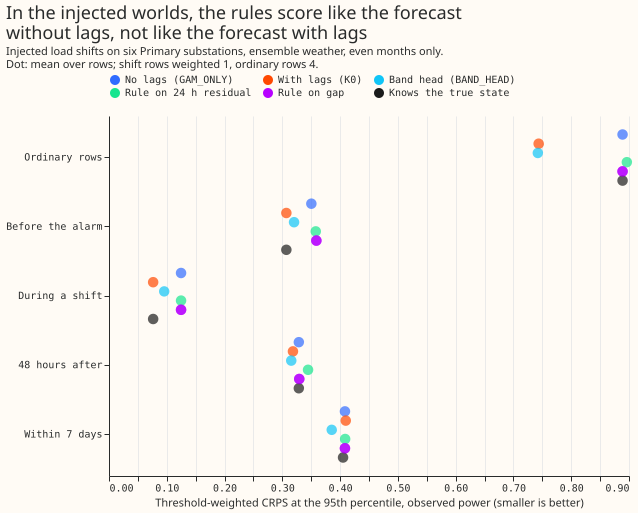
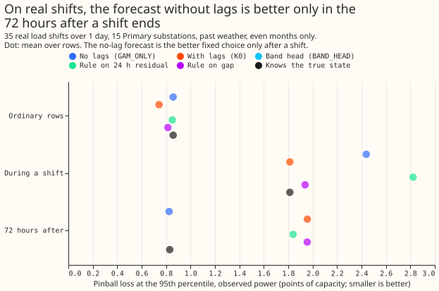

Can the gap between two forecasts tell NGED which one to use, without knowing the truth?
This experiment asks whether NGED, which cannot see which switching arrangement is in force, can choose between two forecasts using only the forecasts and recent power. The forecast without lags (GAM_ONLY, from a generalised additive model) predicts the normal running arrangement (NRA). The forecast with lags (K0, a Kalman filter on recent power readings added to GAM_ONLY) predicts what will flow while an abnormal arrangement lasts. A rule that switches to K0 when a signal says "abnormal" and back to GAM_ONLY otherwise recovered none of the gain that choosing correctly would give, in the injected worlds and in the real record. The real record and the injected worlds use different weather inputs. The real record uses the frozen past-weather forecast of experiment 130 (ERA5 and CAMS estimates of past weather) through experiment 258's harness, scored against observed power only. The injected worlds use the cached ensemble-weather member forecasts (ENS, the ECMWF ensemble) of experiment 297, scored against both observed power and the true normal arrangement. Experiment 308 defined the gap and the carried detectors RO-NC and LR_b20 (the learned score); the row groups G1 to G5 are ordinary rows, before the alarm, during a shift, 48 hours after, and within 7 days.
Does the gap carry more than the residual? (maintainer's question)
The residual (measured power minus GAM_ONLY) flagged more real shifts than the gap, clearly at the learned score's false alarm rate only. K0 is GAM_ONLY plus a filter fitted to recent residuals, so the gap is a filtered copy of the same residual. The gap can therefore add no information that the measured power lacks. The residual matched more shifts than the gap by a clear margin only for the 24-hour window at LR_b20's rate (+9, 4 to 14); the other differences include zero, and the page did not test why the filter loses signal. The differences below come from the stored per-shift flags of experiment 308, with whole shifts resampled; no GAM was refitted. In both rows the thresholds were set on odd months to the false alarm rate of the named detector, so each pair shares an operating point to within one threshold step (the odd-month rates sit within 0.2 per Primary-year of each other).
| At the false alarm rate of | Signal | Matched while on, of 35 | Difference from the gap (95%) | Matched within 4 days of the end | Difference from the gap (95%) | False alarms per Primary-year, odd then even months |
|---|---|---|---|---|---|---|
| Learned score LR_b20 | Gap, leads 0 to 6 h | 11 | n/a | 16 | n/a | 1.17, 1.21 |
| Learned score LR_b20 | Residual, last 6 h | 14 | +3 (-1 to 7) | 17 | +1 (-3 to 5) | 1.23, 1.03 |
| Learned score LR_b20 | Residual, last 24 h | 20 | +9 (4 to 14) | 20 | +4 (0 to 9) | 1.23, 0.91 |
| Learned score LR_b20 | Residual, last 72 h | 17 | +6 (1 to 11) | 18 | +2 (-2 to 6) | 1.10, 1.28 |
| RO-NC | Gap, leads 0 to 6 h | 21 | n/a | 22 | n/a | 3.93, 4.19 |
| RO-NC | Residual, last 6 h | 23 | +2 (-2 to 6) | 23 | +1 (-2 to 4) | 3.87, 3.70 |
| RO-NC | Residual, last 24 h | 24 | +3 (-1 to 7) | 24 | +2 (-2 to 6) | 3.74, 3.52 |
| RO-NC | Residual, last 72 h | 22 | +1 (-2 to 4) | 23 | +1 (-2 to 5) | 3.74, 3.16 |
Experiment 308's "supported" verdict rested on point estimates. Its rule asked the gap to match at least as many shifts as the carried detector at equal false alarm rates (11 against 10, and 21 against 20), with intervals reported beside. The intervals on those differences include zero, so "as many as" is the claim and "more than" is not. The operating points in 308 were equal in that sense, so the 11 of 35 and 20 of 35 figures need no correction.
Does the position inside GAM_ONLY's bands beat the noise-unit residual? (maintainer's question)
Scaling the residual by GAM_ONLY's own band at each half-hour matched at least as many real shifts
as the plain 24-hour residual, and raised more false alarms on the held-out months. The signal
pit24 is the 24-hour mean of the normal score of each half-hour's measured power inside GAM_ONLY's
band. The band is GAM_ONLY's expected value plus a residual quantile function per series and hour
band, fitted on odd-month ordinary half-hours, so the frozen past-weather GAM was not refitted. The
signal ext24 is the 24-hour mean of the absolute normal scores, which ignores the direction of the
miss. Thresholds were set on odd months to the false alarm rate of each carried detector, as in the
table above. Only the real record was scored.
| At the false alarm rate of | Signal | Matched while on, of 35 | Difference from the 24 h residual (95%) | False alarms per Primary-year, even months (95%) |
|---|---|---|---|---|
| Learned score LR_b20 | 24 h residual | 20 | n/a | 0.91 (0.45 to 1.44) |
| Learned score LR_b20 | Band position, signed (pit24) |
22 | +2 (0 to 5) | 2.13 (1.19 to 3.06) |
| Learned score LR_b20 | Band position, absolute (ext24) |
17 | -3 (-8 to 2) | 1.82 (0.96 to 2.73) |
| RO-NC | 24 h residual | 24 | n/a | 3.52 (2.32 to 4.73) |
| RO-NC | Band position, signed (pit24) |
26 | +2 (-2 to 6) | 4.80 (3.35 to 6.31) |
| RO-NC | Band position, absolute (ext24) |
25 | +1 (-3 to 6) | 3.70 (2.67 to 4.79) |
The prediction holds in its point estimates for pit24 and not for ext24. The prediction
named the band-position signal in general; pit24 matches 22 and 26 shifts against 20 and 24, and
ext24 matches 17 and 25. The gain of pit24 is small, and the interval at RO-NC's rate includes
zero. On the even months pit24 raised 2.3 times the false alarms of the residual at the learned
score's rate (2.13 against 0.91 per Primary-year), so the equal odd-month operating points do not
carry over to the held-out months. The page did not test why; one possible reason is that the
odd-month noise differs from the even-month noise.
Results


In the injected worlds, the rules chosen on odd months scored like the forecast without lags in the rows near a shift. On even months, against observed power, the threshold-weighted CRPS at the 95th percentile (twCRPS95) in the rows within 7 days of a shift is 0.408 for GAM_ONLY, 0.410 for K0, 0.385 for BAND_HEAD (the quantile head of experiment 297), 0.409 for the rule on the 24-hour residual, 0.408 for the rule on the gap, and 0.405 for an oracle that knows the true state. The oracle that picks the better of the two forecasts on each row scores 0.330. It also gains in ordinary rows (2.11 against 2.60 for K0 in quantile score), where no shift exists, so most of its gain comes from selecting on the realised score and not from knowing the arrangement. Both thresholds chosen on odd months were the strictest on offer (4.5), where the rule rarely leaves GAM_ONLY; at the other two thresholds the residual rule scored 0.407 and 0.408. The recovery of the per-row oracle's gain in the rows within 7 days is -0.5% for the residual rule (-4% to 3%) and 0.0% for the gap rule (-3% to 3%), against the pre-registered 60%.
In ordinary rows, the forecast with lags scores better than the forecast without lags, so falling back to GAM_ONLY scores worse than staying on K0. In injected ordinary rows the quantile score is 2.60 for K0 and 2.96 for GAM_ONLY, and the residual rule scores 2.98. The rule is 0.38 points worse than K0 (0.29 to 0.48). Against GAM_ONLY the rule is 0.02 points worse (0 to 0.06), at the pre-registered limit of 0.02, and the gap rule is level with GAM_ONLY. The pre-registered limit was a harm against the better fixed forecast, which is K0 in ordinary rows, so the rule fails it. The quantile score is twice the mean pinball loss over 11 quantiles, which approximates the CRPS.
In the real record, the forecast without lags had the lower score only in the 72 hours after a shift ends. Pinball loss at the 95th percentile (points of capacity, even months, resampling 26 to 29 shifts and 53 months) is, for GAM_ONLY, K0, the rule on the 24-hour residual, the rule on the gap, and the oracle that knows the state: 2.44, 1.81, 2.82, 1.94, and 1.81 during a shift; 0.83, 1.96, 1.84, 1.96, and 0.83 in the 72 hours after; and 0.86, 0.74, 0.85, 0.81, and 0.86 in ordinary rows. K0 minus GAM_ONLY is +1.13 points after a shift (0.03 to 2.84) and -0.12 points in ordinary rows (-0.17 to -0.06). During a shift the interval of the same contrast includes zero (-1.86 to 1.07), so K0's lead there is a point estimate. The true-state oracle equals K0 during a shift, so a perfect state flag helps only after the shift ends. The rules did not recover that gain: the residual rule scored 1.84 and the gap rule 1.96 after a shift. On the real record the residual rule chose the strictest threshold and the gap rule the loosest, so the two rules differ in how often they switch.
For curtailment cost, always using K0 or BAND_HEAD scored better than any rule. In the injected rows within 7 days at 12 to 36 hour leads, against observed power, the cost at the scaled limit 0.5 is 2,488 for K0, 2,478 for BAND_HEAD, 2,698 for GAM_ONLY, and 2,670 for the residual rule (pounds per scored half-hour at a price of 2,000 pounds per megawatt-hour and a 20-times breach penalty). The residual rule costs 7.3% more than K0 (3.6% to 12%). The cost was scored on the injected worlds only.
Against the true normal arrangement, neither rule gained over the better of the two fixed forecasts. The target NGED wants for scenario studies is the true normal-arrangement series. GAM_ONLY is the arm built for it, and in the rows near a shift K0 scored about the same (twCRPS95 0.340 for both). BAND_HEAD scored 0.311 and the per-row oracle 0.271. The page does not recommend an arm for that target.
Checks and deviations
- Median against mean forecast error: the absolute error of the median and of the mean forecast differ by at most 0.03 points for GAM_ONLY and K0 at every substation. BAND_HEAD's differ by up to 0.27 points (D16), 0.15 (D9), and 0.14 (D11), because its median and mean come from different heads.
- Leave one substation out: with any of the six injected substations removed, the residual rule's recovery in the rows near a shift stays between -0.06 and 0.00, so no one substation drives the result.
- The planned neighbour-check variant was not run. The plan named a rule with the neighbour check on the real record. The plain rules did not beat the better fixed forecast at the thresholds chosen on odd months, the real record printed only those thresholds, and the check cannot apply in the injected worlds.
- The band-position signal was scored on the real record only. GAM_ONLY's own bands exist on the injected rows only for 131 non-contiguous runs per world, with no trailing 24 hours, so the injected worlds were not scored for it. The real-record bands are a residual quantile function per series and hour band; they carry no lead-time dependence, because the signal reads half-hours that have already happened.
- Not run: the persistent-regime descriptive item (D8's engine spell and a permanent step), the BSP cost proxy, the real-record cost, the 24 hours to 10 days ensemble range, and the before-alarm group on the real record. The real record has 26 to 29 even-month shifts per group, so its intervals are wide, and the odd-month threshold choice on 35 shifts is noisy. The plan defined the group after the end as 48 hours; the real record uses 72 hours, because that is how experiment 258 scored it.
- Definitions that differ between the records. In the injected worlds the oracle that knows the state takes its state from experiment 297's phase label, which uses the target time, so a row whose origin is inside a shift and whose target is after its end counts as after the shift. On the real record the state is read at the origin. The oracle that knows the state is defined for observed power only. The better fixed forecast of each group is picked on the same even-month rows that are then scored, and the bootstrap does not re-pick it. The recovery ratio is ill-conditioned where the fixed forecast and the oracle score almost the same (during a shift in the injected worlds), so the page quotes absolute gains there.
- The
ext24signal is not centred. The mean of absolute normal scores sits near 0.8 in ordinary conditions, so its threshold tests a level, not a departure from a centre, and the contrast with the residual does not test the idea of an extreme position. Thepit24signal is centred. - Thresholds sit at the edge of the grid. Both injected signals chose the strictest threshold
(4.5) on odd months, so no looser or tuned threshold was tested. The comparison of the gap with
the residual windows (
e00309_gap_vs_residual.py) is post hoc and was not in the pre-registered decision rule. - Both ENS and past-weather scores are upper bounds for a live service, because past weather is more accurate than a forecast and the injected worlds replay one ensemble run per day.
What to try next
A flag for the end of a shift is a possible next test. In the groups scored here, the forecast without lags had the lower point estimate with an interval excluding zero only in the 72 hours after a shift ends. A detector that opens its alarm at the end of a shift, such as one reading the step back to the old level, could be scored directly against those rows. A selector built from the signals here does not do that.